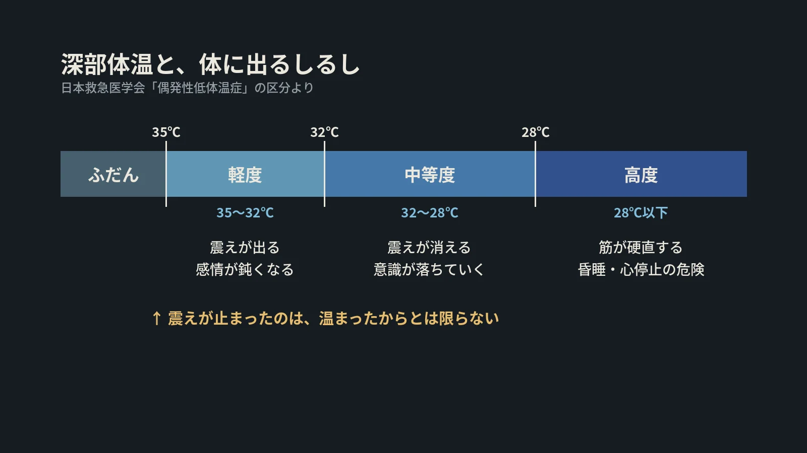

LOTUS VISUAL JOURNAL / 現場の裏側 #winter
震えが止まったら、
温まったとは限らない。
冬の夜の現場と低体温症
冬のイベントは、本番の前の夜に設営し、終わったあとの夜に撤去することが少なくありません。屋外や搬入口の吹きさらしで、長い時間を過ごします。
寒さが体にどう効いてくるのかを、救急医学の学会の説明から読みます。
01 / THE LINE35℃ という線
日本救急医学会の説明では、体の芯の温度(深部体温)が 35℃ 以下に下がった状態を低体温症と呼びます。事故や思いがけない状況で起こるものは「偶発性低体温症」です。
原因は、寒い環境、熱が奪われること、熱をつくる力が落ちること、体温を整える働きが落ちること。これらが一つだけでなく、重なって起こるとされています。起こりやすい状況には、山や水の事故のほか、深酒、高齢、低栄養などが挙がっています。
02 / SIGNS震えは、まだ軽いしるし
学会の区分では、35〜32℃ が軽度、32〜28℃ が中等度、28℃ 以下が高度です。軽度では震えが見られ、感情が鈍くなります。中等度になると震えが消え、意識が落ちていき、呼吸と脈がゆっくりになります。高度では筋肉がこわばり、昏睡や心停止へと進みます。
震えは、体が熱をつくろうとしている動きです。区分を見ると、さらに冷えた段階では震えが消えます。冷えた場所にいた人の震えが止まったとき、それは温まったからとは限りません。返事が鈍い、動きがおかしいと感じたら、本人の「大丈夫」より、周りの目を信じてください。
学会は、30℃ 以下では心臓が刺激に敏感になり、命に関わる不整脈が起こりやすいので、扱いには細心の配慮が要るとしています。
03 / HELP助けるときの順番
米国の国立気象局は、赤十字の手順として、冷えた人を助けるときの順番を載せています。まず救急に通報し、そっと暖かい場所へ移す。呼吸と脈を見守る。濡れた服を脱がせて乾かし、毛布や乾いた服でゆっくり温める。湯たんぽやカイロは、タオルや毛布で包んでから使う。
同じページは、温かいお湯に入れるなど急に温めると、危ない不整脈を起こすおそれがあると書いています。日本では救急は 119 番です。
LOTUS VISUAL へのご相談では
冬の野外や夜の搬入・搬出がある現場では、作業の時間割と一緒に、暖を取れる場所、着替えを置ける場所、交代の段取りを、最初の打ち合わせで確認させてください。
機材の段取りと同じように、人の体の段取りも、本番の前に決めておくものだと考えています。
今日の持ち帰り
- 35℃ 以下が低体温症。寒さに、濡れ・疲れ・空腹・お酒が重なると起こりやすい。
- 震えは軽いしるし。さらに冷えると震えは消える。止まった震えは、安心の合図とは限らない。
- 通報して、そっと、胴から、ゆっくり。急に温めない。